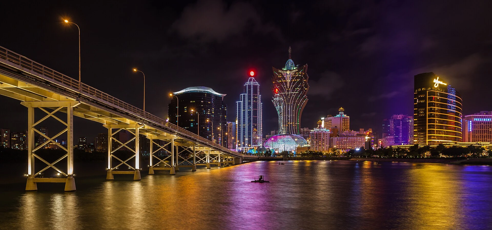

12TH SCIENTIFIC MEETING
Macao 2027
The 12th Scientific Meeting of the Asian Society for Vascular Biology
Vascular Health and Disease Pathogenesis: Exploring Mechanistic and Translational Frontiers
- Planned scientific sessions
- 23–24 August 2027
- Proposed venue
- Macau University of Science and Technology
- Scientific programme
- Lectures · Young Scholar Forum · Posters
THE SOCIETY
Asian Society for
Vascular Biology
Since its first scientific meeting in Shanghai in 2005, ASVB has brought together basic scientists, clinicians and early-career researchers from across the Asia-Pacific to study vascular function and disease.
About the Society and its history